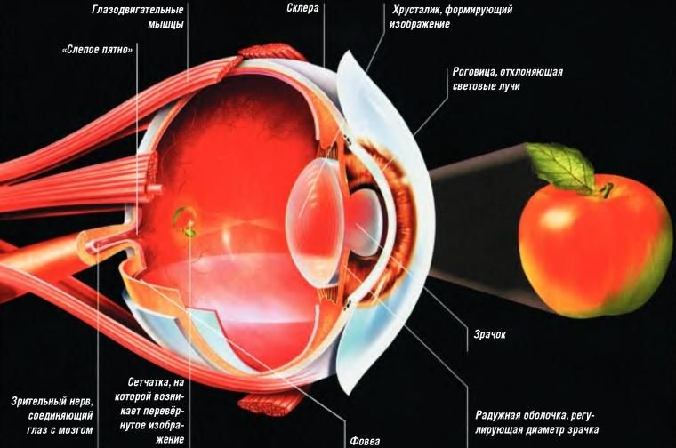

Вы знаете, что нет на свете человека, которому удается сохранить одинаковую остроту зрения на протяжении всей жизни? Проблемы со зрением настигают абсолютно всех — кого-то с самого рождения, в детстве или в юности, а кого-то — ближе к «закату». Но неоспоримым остается тот факт, что с каждым годом эти проблемы не только возрастают в количестве, но и становятся значительно «моложе» по возрасту. Особенно актуален этот вопрос для городских жителей. Чем это обусловлено? Не нужно обладать незаурядными аналитическими способностями, чтобы понять, что горожане меньше двигаются, живут в гораздо большем стрессе и худших экологических условиях, хуже питаются, больше времени проводят за компьютером и сильнее подвержены депрессиям, чем жители периферии.
Почему это отражается на нашем зрении? Зрение — это не только один из способов восприятия окружающего мира, не только функция, данная большинству из нас от рождения. Зрение — это бесценный дар, который необходимо беречь. И этот дар настолько удивителен, что до сих пор некоторые его проявления и возможности порой просто изумляют. Мы же, в большинстве своем, относимся к этому дару как к должному и спохватываемся только тогда, когда начинаем его терять.
Глаз человека имеет поразительную восприимчивость к самым различным цветовым оттенкам. При хороших условиях обзора и достаточно ярком освещении глаз человека без помощи каких-либо оптических приборов способен различить более 10 миллионов цветовых оттенков. Если сравнивать этот показатель с самым точным в мире электроспектрографометром, то прибор «проигрывает» человеческому глазу на 60%!
Чем же еще так удивительно наше зрение?
Необходимо всего около 60-80 минут, чтобы человеческий глаз адаптировался к темноте. Если человек находится в темноте всего 1 минуту, то светочувствительность его глаз возрастает в 10 раз, а если оставить его в темноте на 20 минут, то светочувствительность возрастет уже в 6 000 раз!
Через зрение мы получаем около 9/10 всей поступающей в наш мозг информации, и качество работы одного из самых сложных «механизмов» нашего организма — зрительного анализатора — зависит от огромного количества всевозможных факторов, основными из которых являются питание, движение, вредные привычки, физические и зрительные нагрузки, образ жизни.
При ухудшении зрения мы теряем и часть перечисленных выше способностей, восстановить которые полностью без операционного вмешательства до настоящего времени считалось невозможным.
Но сегодня все изменилось! Вы держите в руках уникальную систему по полному восстановлению зрения! Данная система позволит вам решить проблемы со зрением даже при таких, казалось бы, нерешаемых проблемах, как сильная близорукость, дальнозоркость, катаракта, глаукома, астигматизм и т.д.
Но, всему свое время. Давайте не будем забегать вперед и для начала разберемся, в чем же конкретно заключаются причины глобального ухудшения зрения у большинства жителей нашей планеты.
1. Компьютер. Основным пагубным последствием, которое настигает нас после многочасовых «восседаний» перед экраном компьютера становится компьютерный зрительный синдром (КЗС). Характерные признаки этого синдрома — покраснение глаз, ощущение жжения, «затуманенность» зрения, быстрая утомляемость.
Еще одним неприятным последствием регулярного сидения за компьютером является синдром сухого глаза. Причины его до смешного просты: когда мы за компьютером, то большую часть времени, не мигая, смотрим в экран. Количество морганий резко сокращается и их становится недостаточно для увлажнения роговицы глаза. Как результат — жжение, резь в глазах, зуд и ощущение «песка» — все признаки вышеназванного синдрома.
2. Возраст. Есть даже шутка на эту тему, что с наступлением сорокалетнего барьера, с каждым годом при чтении наши руки становятся все короче. При наступлении таких симптомов главное — не «скатиться» до очков или контактных линз, так как это — путь к еще большему ухудшению зрения. Полностью решить проблему возрастных изменений зрения (пресбиопии) вам поможет данная методика.
3. Пагубные привычки — алкоголизм, курение, наркомания, обжорство. Вы замечали, что у людей, подверженных перечисленным вредным привычкам, глаза выглядят не совсем здоровыми? У курильщиков — слезятся. У алкоголиков — белки краснеют, покрываются сосудистой сеткой, а радужная оболочка обесцвечивается и «подергивается пленкой» — глаза становятся мутными и невыразительными. У наркоманов взгляда просто нет — зрачок неподвижный расширенный, а взгляд — затуманенный, направленный вникуда. Ну, а что касается людей, которые любят плотно и вкусно поесть — об их взгляде даже литература пишет с издевкой, типа: «… взгляд осоловел, — видно, много мыслей было в голове!»
На самом деле, пагубные привычки ведут к интоксикации головного мозга, в том числе и тех участков его коры, которые отвечают за зрительное восприятие. Это, в свою очередь, не может не отразиться на зрении.
Ни для кого не станет открытием, что глаз — это орган зрения, и видим мы за счет восприятия световых раздражителей. Человеческий глаз имеет почти шарообразную форму (отсюда и название — глазное яблоко). По строению (для упрощения восприятия) его можно сравнить с фотоаппаратом — темной «камерой», в передней части которой находится отверстие — зрачок, через которое в «камеру» попадают лучи света. Глазное яблоко соединяется с головным мозгом при помощи зрительного нерва.
Стенки глазного яблока состоят из трех оболочек. Внутри располагается светопреломляющая среда — стекловидное тело, покрытое внешней белковой оболочкой. Роль этой оболочки — защитная и механическая. Также внешняя белковая оболочка — это место крепления глазодвигательных мышц. Под белковой расположена сосудистая оболочка глаза, предназначенная для питания всех глазных тканей, в том числе и сетчатки глаза. Сетчатка — это именно та часть глаза, за счет которой мы непосредственно видим. По своему строению она напоминает головной мозг и состоит, в основном, из нервных клеток. Сетчатка покрывает всю заднюю часть глазного яблока. По функциональности она схожа с чувствительным элементом видеокамеры.
Сразу же после того, как свет попадает на сетчатку глаза, в головной мозг по зрительному нерву передается сигнал. Мозг обрабатывает этот сигнал, и мы видим то, что находится у нас перед глазами.
На передней части сосудистой оболочки глазного яблока находится радужная оболочка. Роль радужной оболочки — регулировка силы светового потока и резкости изображения. Совокупность мышц радужки, сужающих и расширяющих зрачок,— это, по сути, аккомодационный аппарат человеческого глаза. Аккомодация — способность глаза трансформировать форму хрусталика в зависимости от того, на каком расстоянии находится рассматриваемый предмет. Принцип действия мышц радужки — рефлекторный. То есть, управлять этими мышцами мы не можем. Помимо этого, радужная оболочка содержит клетки пигмента, определяющие цвет наших глаз.
В центре радужной оболочки располагается зрачок, а с ее задней стороны — хрусталик, представляющий собой главный элемент аппарата светопреломления. Хрусталик обладает удивительной эластичностью, и, в зависимости от того, на каком расстоянии находится рассматриваемый предмет, — становится то более, то менее выпуклым. Это и есть аккомодация глаза.
С наступлением определенного возраста (обычно после сорока лет), мышцы радужки постепенно атрофируются, и способность к аккомодации значительно уменьшается. Так возникает возрастная дальнозоркость.
Глазное яблоко располагается в специальном углублении, именуемом орбитой или глазницей. Передняя часть глазного яблока покрыта конъюнктивой — прозрачной слизистой оболочкой. Конъюнктива выполняет защитные функции, предохраняя глаза от инфекции, а также от попадания пыли и грязи.
При помощи глаз мы можем определять не только свет и цветовые оттенки, но и форму предметов, а также их расположение в пространстве. Эту возможность обеспечивают нам глазодвигательные мышцы, располагающиеся вокруг глаза. Всего таких мышц — по три пары на каждом глазу. Глазодвигательные мышцы снабжены не только «двигательными» нервами, но и «чувствующими». Возникающее при движении глазных яблок возбуждение в этих нервах передается в головной мозг. Таким образом, работая с мышцами глаз, намеренно тренируя их, мы влияем на работу головного мозга и улучшаем зрение.
В нашей жизни все взаимосвязано. По качеству нашего зрения можно с легкостью определить, как мы воспринимаем этот мир. Доказано, что если человек от чего-то отгораживается, не желает что-то видеть, если на уровне подсознания его что-то не устраивает, то нередко это становится причиной ухудшения зрения или возникновения иных проблем с глазами. Это могут быть события, которые имели место в прошлом, негативная реакция на текущую ситуацию или на собственные мысли о будущем. Застарелые обиды, неумение прощать, неспособность чувствовать себя счастливым здесь и сейчас, ощущение себя «не таким, как все», страх перед действительностью — все это «запрятанные» в подсознание психологические причины падения зрения.
Вы можете не согласиться, ведь зачастую плохое зрение — это недуг, который настигает даже маленьких детей. Если дело не касается наследственных факторов, то ситуация с ухудшением зрения у детей вполне объяснима. Если у ребенка начало снижаться зрение — это основной показатель того, что обстановка, в которой живет малыш, оставляет желать лучшего. Маленькие дети практически всегда бессильны изменить ситуацию на более положительную. И они просто «отгораживаются», не желая на что-то смотреть. Малыши неосознанно, на уровне подсознания рассеивают внимание, сглаживают контуры, — стараются сделать так, чтобы окружение меньше давило на них.
Другой причиной падения зрения у малыша может быть любимый член семьи, имеющий плохое зрение и носящий очки. Ребенок неосознанно перенимает модель поведения этого человека со всеми вытекающими последствиями.
В первую очередь, так называемые возрастные ухудшения зрения связаны с ухудшением состояния позвоночника, неправильным питанием, многочисленными инфекциями, которым подвергался человек на протяжении всей своей жизни, а также в связи с ограниченной подвижностью. Вы можете удивиться, а при чем тут позвоночник или гиподинамия? Как раз-таки плохое состояние позвоночника (которое чаще всего бывает следствием гиподинамии) и является основной причиной возрастных ухудшений зрения. Хотите подробностей?
Большинство заболеваний внутренних органов, которыми «награждает» нас вторая половина жизни, связано именно с ухудшением состояния позвоночника. Для того чтобы позвоночник не терял своей формы, необходимо каждый день давать ему определенную полезную нагрузку.
Если вы ведете сидячий образ жизни, позвоночник не получает должного количества необходимых ему движений. Вы теряете гибкость, а это, в свою очередь, способствует накоплению всевозможных отложений. Межпозвонковые хрящи становятся жесткими, а вся «грязь» спрессовывается в своеобразный «панцирь», сковывающий движения и защемляющий нервные корешки. В связи с этим во всех органах и тканях нарушаются обменные процессы.
Если речь идет о нарушении осанки, то этот дефект изначально способствует неправильному перераспределению нагрузки, которая приходится на межпозвонковые диски. Таким образом, межпозвонковый диск недополучает должного питания, что приводит к смещению позвонков и сдавливанию нервных корешков, а также сосудов кровеносной и лимфатической системы. Это влечет за собой нарушение нормальной циркуляции спинномозговой жидкости не только в позвоночнике, но и во внутричерепном пространстве. Начинает работать хуже не только спинной, но и головной мозг. Если ситуацию не исправить, то постоянные проблемы с питанием межпозвонкового диска постепенно приводят к снижению эластичности фиброзного кольца, в результате чего оно становится не в состоянии выдерживать должное давление, и в нем образуются трещины. Через эти трещины, за счет давления, начинает «выжиматься» студенистое ядро. Так образуются межпозвонковые грыжи.
Нарушения в позвоночнике вызывают такие «обыденные» для нашего времени заболевания, как кифоз, сколиоз, миозит, радикулит, ишиас, грыжа Шморля, люмбаго, остеохондроз и т.п. Кстати, причина вегетососудистой дистонии, симптоматической гипертензии, всевозможных нарушений кровоснабжения головного мозга, разнообразных артрозов, межреберной невралгии, мигрени, кривошеи и многих других заболеваний — также кроется в проблемах с позвоночником. Не правда ли, похоже на детективную историю? Именно по этой причине данная методика содержит в себе несложные, но очень эффективные упражнения на все отделы позвоночника.
На страницах данного курса мы расскажем вам о том, как восстановить зрение при помощи выполнения простых упражнений и рекомендаций, касающихся питания. Если вы думаете, что данный курс действует сам по себе, без вашего участия — не тратьте понапрасну время на прочтение. Мы не обещаем чуда, которое свалится вам на голову, пока вы будете мирно лежать на диване, поглядывая сквозь очки на телевизор и пожевывая гамбургер с колой. Чудо прозрения можете совершить только вы сами, шаг за шагом выполняя наши рекомендации. Все, что от вас требуется, — это желание видеть хорошо, намерение осуществить это желание и пошаговое освоение и применение данной методики.
Помните, что достигнуть успеха и закрепить результат навсегда, время от времени выполняя что-нибудь и как-нибудь, у вас не получится. Только систематизированные занятия! Вам придется побороть свою лень. А если не удастся, — найти компромиссное решение (например, выполнять гимнастику для глаз лежа). Если вы все сделаете правильно, то уже через 40 дней навсегда забудете о том, что когда-то были «хроническим очкариком» или имели какие-то иные проблемы со зрением.